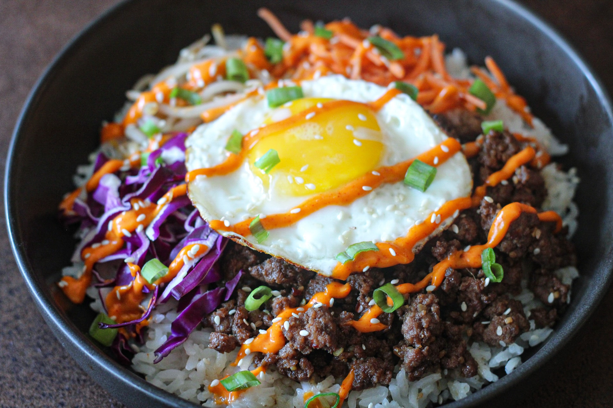

Home
Bibimbap

What is it?
"Bibimbap" is a beloved Korean dish, meaning "mixed rice," consisting of a bowl of steamed rice topped with various seasoned vegetables, often including marinated meat (like beef), a fried egg, and a spicy sauce, all mixed together before eating.
Ingredients
- Steamed rice
- Marinated beef
- Fried egg
- Sesame oil
- Gochujang sauce
- Assorted vegetables
How to make
- Prepare your vegetables by frying in sesame oil
- Next, fry your marinated beef
- Meanwhile, fry an egg until medium rare
- Put steamed rice into a hot stone bowl
- Arrange the assorted vegetables and beef in nice way (presentation is key!)
- Layer on the fried egg and top with spicy gochujang sauce